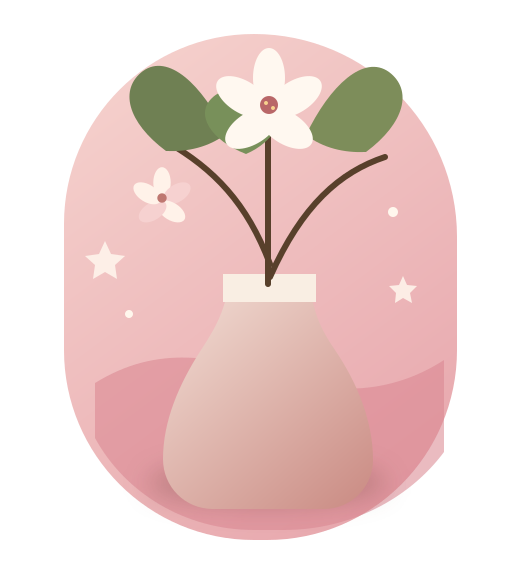

Diseño & edición
Identidad visual, composición y fotografía para construir mundos gráficos coherentes.
Diseño con intención · Cochabamba, Bolivia
Diseñadora Gráfica y Productora Crossmedia | Ilustradora & Modeladora 3D
Transformo conceptos estratégicos en sistemas visuales, empaques y experiencias digitales de alto impacto.
Curiosidad, estrategia y un poco de magia visual.

Un poco de mí
Soy estudiante de 7mo semestre de Diseño Gráfico y Producción Crossmedia en UNIFRANZ, Cochabamba.
Mi perfil combina dirección de arte, diseño editorial, ilustración digital, empaques y producción crossmedia. Disfruto convertir desafíos en soluciones visuales claras, memorables y con propósito.
Trabajo con un enfoque metodológico, estratégico y versátil para resolver problemas de comunicación visual, desde la idea y la retícula hasta una experiencia integral.
Conoce mi forma de trabajarMi caja de herramientas
De la primera idea al último detalle.
Identidad visual, composición y fotografía para construir mundos gráficos coherentes.
Personajes, objetos y pequeñas historias que cobran vida en nuevos formatos.
Identificadores gráficos, empaques estructurados, sistemas editoriales y experiencias crossmedia.
Proyecto editorial destacado
Un ejercicio de diseño editorial centrado en la composición, el ritmo visual y una narrativa gráfica inmersiva.
Proyecto editorial desarrollado con maquetación avanzada en InDesign, tratamiento tipográfico y exploración de retículas complejas. El diseño conceptual acompaña el contenido y construye una experiencia de lectura coherente de principio a fin.
Vista previa del documentoAbrir en pantalla completa ↗
Una selección de proyectos
Proyectos multidisciplinarios desarrollados con atención al contexto, las personas y cada punto de contacto.
Packaging · Diseño estructural 01
Desarrollo de estructuras de cartón troquelado y optimización de la experiencia de consumo, protegiendo del frío y facilitando una manipulación funcional.
Sistema gráfico · Crossmedia 02
Sistema gráfico y estrategia conectada para causas ambientales en Cochabamba: señalética urbana, piezas analógicas y micrositio web.
Retail · Merchandising · E-commerce 03
Diseño de manual de marca, distribución estratégica de zonas frías y calientes, marketing sensorial y optimización de tienda digital.
Identidad corporativa · UX/UI 04
Investigación diagnóstica y conceptualización de identidad, con flujos digitales orientados a las necesidades de las personas usuarias.
¿Creamos algo bonito?
Estoy abierta a colaboraciones, prácticas y proyectos con propósito. Cuéntame qué tienes en mente.
Cochabamba, Bolivia